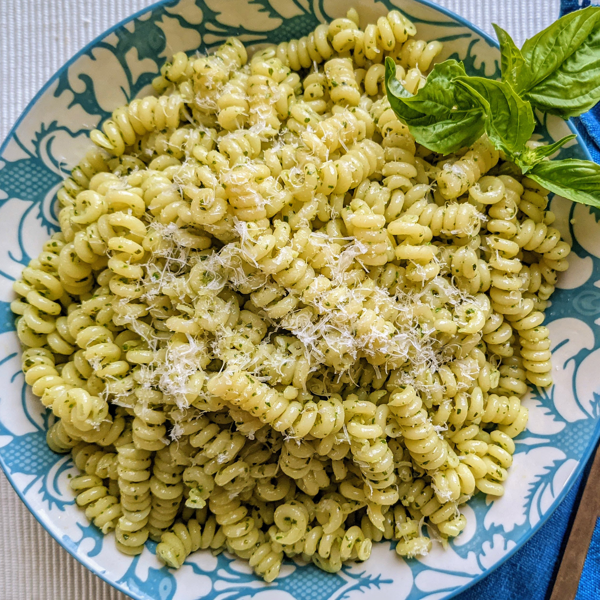

Pesto Pasta

Recipe
Today you will be making a pesto pasta. Below will be proper steps in creating this dish.
Its easy to make, but full of flavor! Good hot or cold.
Ingredients
- ½ cup chopped onion
- 2½ tablespoons pesto
- 2 tablespoons olive oil
- 2 tablespoons grated Parmesan cheese
- 1 (16 ounce) package pasta
- salt to taste
- ground black pepper to taste
Directions
Step 1
- Cook pasta in a large pot of boiling water until done. Drain.
Step 2
- Meanwhile, heat the oil in a frying pan over medium low heat. Add pesto, onion, and salt and pepper.
Cook about five minutes, or until onions are soft.
Step 3
- In a large bowl, mix pesto mixture into pasta. Stir in grated cheese. Serve.
Bong Apple Tea